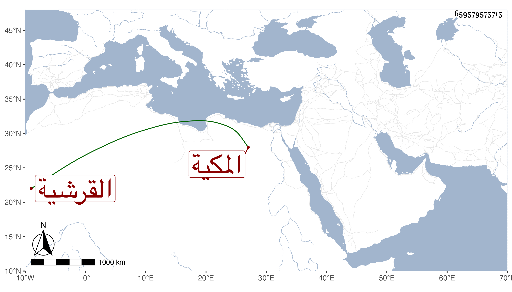

0902Sakhawi.DawLamic.ITO20230111-ara1.EIS1600.659579575715
Biography ID: 659579575715
314
ست الاهل ابنة عبد الكريم بن أحمد بن عطية بن ظهيرة القرشية المكية أمها أم كمال ابنة ابن عبد المعطي أجاز لها في سنة ثمان وثمانين فما بعدها النشاورى والصردى وابن حاتم والعراقى والهيثمي وغيرهم وما كانها حدثت لكنها اجازت في الاستدعاآت وقد تزوجها قريبها محمد الطويل بن عبد الكريم بن محمد بن أحمد ابن عطية فأولدها جماعة . وماتت في ربيع الاخر سنة تسع وأربعين .
